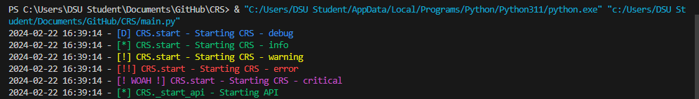

Logging
Arguably the MOST IMPORTANT part of this project, logging. Note, this applies for both the Web instance, and the Api Instance
Overview
Logging in the CRS is done with Python's logging library, and a singleton. Why the singleton? Cause it makes life easier, and there's only one instance of the logger to deal with (which can be a real pain...)
Using the logger:
Using the logger is easy:
Setup: Class Based (preferred):
Import the logger:
from Utils.Logger import LoggingSingleton
Set up the logger in your __init__ class:
MyClass:
def __init__(self):
# please name it self.logger for consistency.
self.logger = LoggingSingleton.get_logger()
Setup: Not using classes (for whatever reason):
Import the logger:
from Utils.Logger import LoggingSingleton
Set a variable as the logger
logger = LoggingSingleton.get_logger()
Calling the logger/logging things
There are 5 main logger levels:
-
DEBUG: Intended for detailed diagnostic information, useful for diagnosing problems but not relevant during normal operations.
-
INFO: Used for routine information that confirms the program is working as expected, such as startup confirmations.
-
WARNING: Indicates a potential problem that should be paid attention to, but the application can still function.
-
ERROR: Reports a problem that has caused a failure in a specific part of the application, but it doesn't affect the overall program operation.
-
CRITICAL: Signals a severe issue where the program cannot continue running, requiring immediate attention. Please exit() on criticals.
To call each of these:
self.logger.debug("YourTextHere")
self.logger.info("YourTextHere")
self.logger.warning("YourTextHere")
self.logger.error("YourTextHere")
self.logger.critical("YourTextHere")
Every logger call will print the parent class (if applicable) and the calling function, and log it to a file (CRS.log), so you just need to supply the text you want to say, and it's good to go:
 oooh pretty colors.... Note those may or may not work in your terminal, they use ANSI color codes IIRC